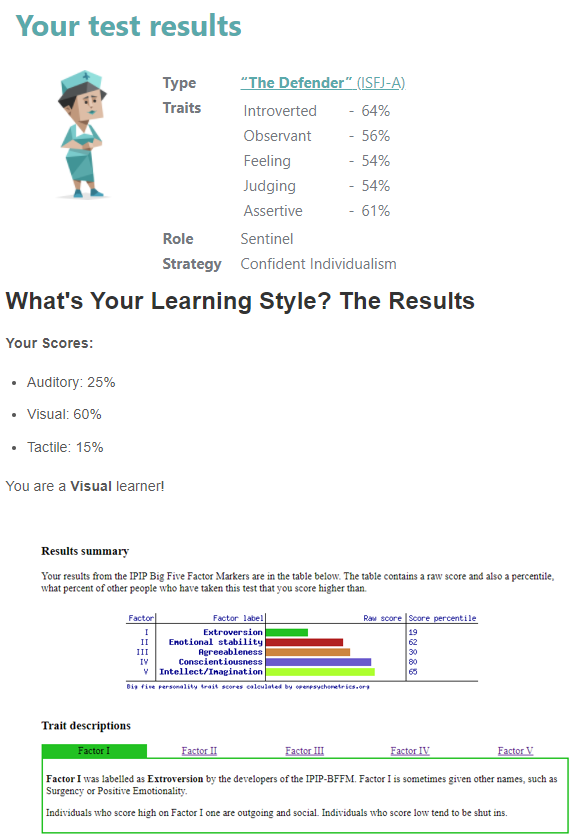

Nicholas Joiner Profile
Name: Nicholas Joiner
Student Number : S3203466
Email Address : S3203466@student.rmit.edu.au
Nationality : Australian
Languages Spoken : English
About Me
I live in Victoria, Australia, I have mostly worked in the corporate Aviation but for the last few years I have worked in a family business Dromkeen, the home of children’s literature and artwork. For the last few years at Dromkeen we have held literature festivals and various exhibitions in which I have been directly involved in, from website content management to audio-visual setup and management. I am currently a student enrolled in 'Introduction to Information Technology' and 'Introduction to Programming' through Open Universities Australia, studying at RMIT. Through my studies at RMIT I hope to open opportunities within the IT industry.
Interests In IT
From an early age, I have always been fascinated with different forms of Technology. I have enjoyed building and maintaining computers, deconstructing and fixing various laptops and mobile phone devices around the house. I try to keep informed about the various technological inovations and news from around the world. I also have an interest in how different devices seamlessly interact with each other. I also look after the 'Dromkeen' website(using wordpress) and social media content. Information Technology is like Aviation in the from aspect that there is a lot of problem-solving is involved and that you have to troubleshot and understood how a particular system works to enable you to find a solution.
Ideal Job In IT
At this point in time, I believe I would like to be a "Front End Web Developer". Someone who designs and implements visual elements and how a user should interact within a website. When designing this website the Front End Web Developer also needs to understand SEO(Search Engine Opimisation), to generate website traffic through the use of search engines, such as Google, Bing and Yahoo. Although, as i progress my studies through RMIT, my ideal job may change. I will ensure not to close any doors and keep and open mind when finding my Ideal Job throughout the course.
Personality Profile
I have taken three different personality test to outline my personal profile.
The three personality tests I have taken are the Myer Briggs, Big 5 Personality , and the Learning Style tests.
